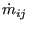
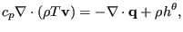
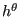
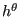
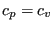
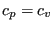
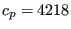

Next: Turbulent Flow in Open Up: Types of analysis Previous: Aerodynamic Networks Contents
Hydraulic networks are made of a concatenation of network elements (see section 6.2.33) filled with an incompressible medium. A network element consists of three nodes: in the corner nodes the temperature and pressure are the unknowns, in the midside node the mass flow is unknown. The corner nodes play the role of crossing points in the network, whereas the midside nodes represent the flow within one element. To determine these unknowns, three types of equations are available: conservation of mass and conservation of energy in the corner nodes and conservation of momentum in the midside node. Right now, only stationary flow is considered.
The stationary form of the conservation of mass for incompressible fluids is expressed by:
| (388) |
where  is the density and
is the density and
 the velocity vector. Integration
over all elements connected to an corner node yields:
the velocity vector. Integration
over all elements connected to an corner node yields:
where  is the mass flow from node i to node j or vice versa. In the above equation is always positive.
The conservation of momentum reduces to the Bernoulli equation. It is obtained by projecting the general momentum equation on a flow line within an element with corner nodes i and j and reads:
Here,  is the height of the node,
is the height of the node,  the pressure,
the pressure,  the density,
the density,  the gravity acceleration,
the gravity acceleration,  the cross section in the node and
the cross section in the node and
 is the head loss across the element. The head loss is positive if the flow
runs from i to j, else it is negative (or has to be written on the other side
of the equation). The head losses for different types of fluid sections are
described in Section 6.5.
is the head loss across the element. The head loss is positive if the flow
runs from i to j, else it is negative (or has to be written on the other side
of the equation). The head losses for different types of fluid sections are
described in Section 6.5.
Notice that the height of the node is important, therefore, for hydraulic networks the gravity vector must be defined for each element using a *DLOAD card.
The conservation of energy in stationary form requires ([19]):
|  | (391) |
where
 is the external heat flux,
 is the body flux per
unit of mass,
is the external heat flux,
 is the body flux per
unit of mass,  is the specific heat at constant pressure (which, for a
fluid, is also the specific heat at constant specific volume, i.e.  [26]) and
is the specific heat at constant pressure (which, for a
fluid, is also the specific heat at constant specific volume, i.e.  [26]) and  is the
absolute temperature (in Kelvin). Integration of the energy equation over all elements belonging to end
node
is the
absolute temperature (in Kelvin). Integration of the energy equation over all elements belonging to end
node  yields:
yields:
 |
(392) |
where
 is the convection coefficient with the
walls. If one assumes that all flow entering a
node must also leave it and taking for both the
is the convection coefficient with the
walls. If one assumes that all flow entering a
node must also leave it and taking for both the  value corresponding to
the mean temperature value of the entering flow, one arrives at:
value corresponding to
the mean temperature value of the entering flow, one arrives at:
where
 .
.
The calculation of hydraulic networks is triggered by the *HEAT TRANSFER keyword card. Indeed, such a network frequently produces convective boundary conditions for solid mechanics heat transfer calculations. However, network calculations can also be performed on their own, i.e. it is allowed to do *HEAT TRANSFER calculations without any solid elements.
To determine appropriate boundary conditions for a hydraulic network the same rules apply as for aerodynamic networks.
Output variables are the mass flow (key MF on the *NODE PRINT or *NODE FILE card), the static pressure (key PN -- network pressure -- on the *NODE PRINT card and PS on the *NODE FILE card) and the total temperature (key NT on the *NODE PRINT card and TT on the *NODE FILE card). Notice that the labels for the *NODE PRINT keyword are more generic in nature, for the *NODE FILE keyword they are more specific. These are the primary variables in the network. Internally, in network nodes, components one to two of the structural displacement field are used for the mass flow and the static pressure, respectively. So their output can also be obtained by requesting U on the *NODE PRINT or *NODE FILE card.
Notice that for liquids the total temperature virtually coincides with the static temperature. Indeed, since
| (394) |
the difference between total and static temperature for a fluid velocity of 5
m/s and  J/(kg.K) (water) amounts to 0.0030 K. This is different
from the gases since typical gas velocities are much higher (speed of sound
is 340 m/s) and  for gases is usually lower.
for gases is usually lower.